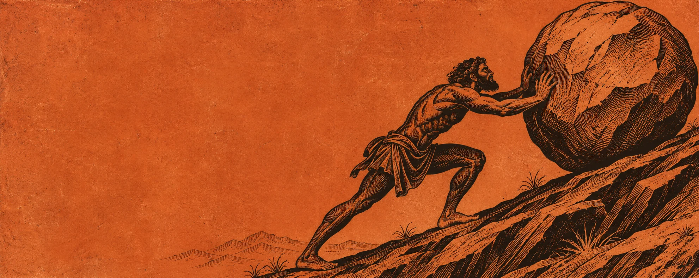
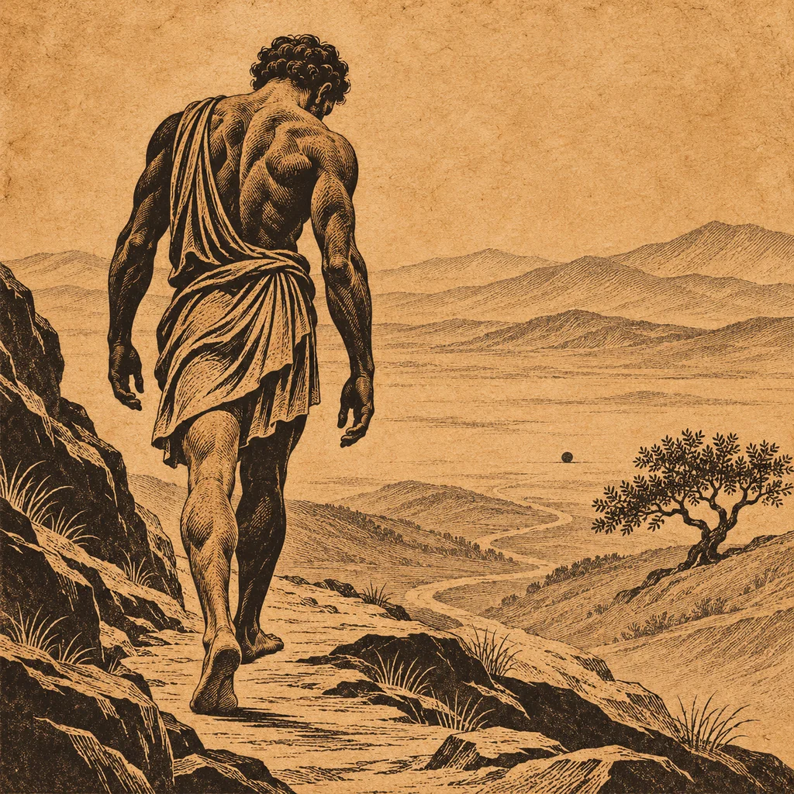

哲学终章ALBERT CAMUS · 1942
石头落下以后
在《奥德赛》里，我们几乎能摸到西西弗斯肩上的尘土。荷马写他怎样把巨石推上去，又怎样俯身重新用力。两次推举之间，有一段路，诗人没有细写。
1942 年，加缪在随笔《西西弗神话》里陪他走了这段路。石头已经落到谷底，双手暂时空了。西西弗斯知道下一次推举的结局。他有时间把自己的命运从头想一遍。
一个清楚知道结局的人，
还能怎样生活？

冥府里的推石人，曾是人间最擅长想办法的国王。沿着三段古代记述，看他的计谋怎样一步步走到尽头。
沿着双耳瓶的弧面，推石者俯身向前。黑色剪影勾出他的姿态，细细的刻线划开黑釉，让胡须、衣褶和绷紧的肌肉显出陶土的颜色。
在画面上，认出他只需要一块石头和一双前推的手。可要读懂加缪，就得再等一等，看这双手松开以后，人去了哪里。
图版 05 · 当代黑绘风格复原
哲学终章ALBERT CAMUS · 1942
在《奥德赛》里，我们几乎能摸到西西弗斯肩上的尘土。荷马写他怎样把巨石推上去，又怎样俯身重新用力。两次推举之间，有一段路，诗人没有细写。
1942 年，加缪在随笔《西西弗神话》里陪他走了这段路。石头已经落到谷底，双手暂时空了。西西弗斯知道下一次推举的结局。他有时间把自己的命运从头想一遍。
一个清楚知道结局的人，
还能怎样生活？
人想知道，每天醒来、劳作、衰老，这一切究竟为了什么。世界照常运转，却没有回答这个「为什么」。加缪把荒诞放在两者相遇的地方。我们越渴望一个明白的理由，就越能听清那片沉默。
只要还盼着哪一次能把石头永远留在山顶，他活的就是那一天。下山时，他看清了这个盼头。他仍愿意活下去，也仍保有追问的权利。让这种张力一天一天持续，加缪称之为反抗。
加缪也写他悲伤的日子。地上的阳光涌入记忆，石头的重量会更难承受。也会有另一些日子，他能感觉到掌下每一粒石屑。诸神可以让石头滚落，却无法替他感受这一刻。这里才有了幸福的可能。
必须想象西西弗斯是幸福的。
Il faut imaginer Sisyphe heureux.
我希望终有一天，我也能发现：我身上有个不可战胜的夏天